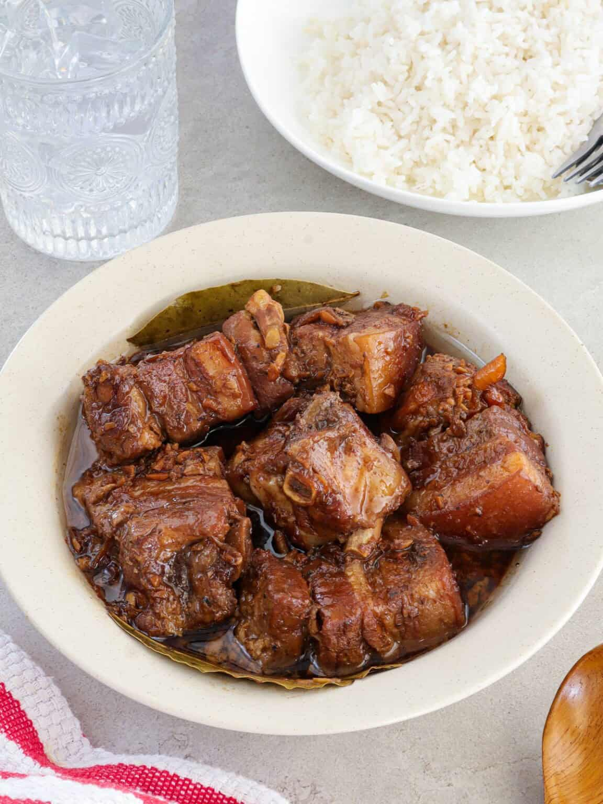

Pork Adobo
Home

Ingredients:
Filipino Pork Adobo (Adobong Baboy)
is a savory, tangy, and garlicky staple that showcases meat
slow-braised in soy sauce, vinegar, and aromatics.
This simple one-pot recipe balances intense savory
flavors with a pleasant tang, producing a rich glaze that
is best served over a steaming mound of white rice.
- 2 lbs (1 kg) Pork Belly – Cut into 2-inch cubes (pork shoulder also works well if you want a leaner cut).
- ⅓ 1cup White Vinegar or Cane Vinegar – Delivers the signature tang.
- 1 head Garlic – Smashed and peeled.
- 3-4 pieces Dried Bay Leaves – Adds a deep, herbal undertone.
- 1 tbsp Whole Black Peppercorns – Essential for subtle heat and texture.
- 1-2 cups Water – For simmering and tenderizing.
- 1 tbsp Brown Sugar – Optional, just to balance the sharp acidity.
- 1 tbsp Cooking Oil – For searing the meat.
Step-by-Step Instructions
- Sear the Pork
Heat the oil in a large pot or wok over medium-high heat. Add the cubed pork belly in batches and sear until all sides are lightly browned and the natural fats begin to render.
- Sauté the Aromatics
Toss the smashed garlic, whole black peppercorns, and dried bay leaves directly into the pot with the pork. Sauté for 1 to 2 minutes until the garlic turns fragrant and golden.
- Simmer with Soy Sauce
Pour in the soy sauce and water, stirring gently to scrape up any browned bits from the bottom of the pot. Bring the mixture to a boil, then lower the heat, cover, and let it simmer for 30 to 40 minutes until the pork starts to get tender.
- Add the Vinegar
Pour the vinegar evenly over the meat. Crucial tip: Do not stir the pot for the first 3 minutes after adding the vinegar, and leave the lid off. This allows the harsh, raw alcohol taste to cook off, leaving behind a smooth, pleasant tang.
- Reduce and Glaze
Stir in the brown sugar if you prefer a subtle hint of sweetness. Simmer uncovered on medium-high heat for another 10 to 15 minutes, allowing the liquid to reduce down into a thick, glossy glaze that coats the tender pork.